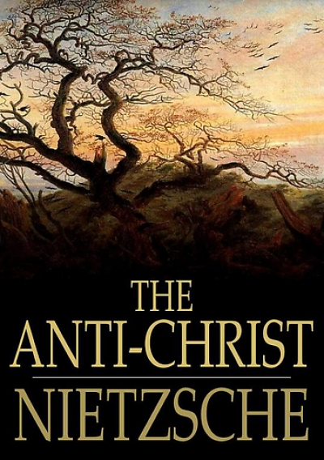
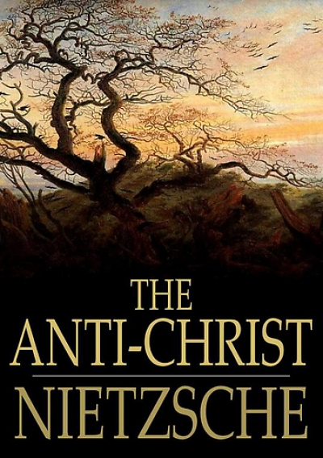

Fridrih Vilhelm Niče (Friedrich Wilhelm Nietzsche) bio je radikalni nemački filozof, filolog i pesnik, utemeljivač „filozofije životaˮ („Lebens-philosophiaeˮ), jedan od najvećih modernih mislilaca i jedan od najoštrijih kritičara zapadne civilizacije, kulture i hrišćanstva. Rođen je 15. oktobra 1844. godine u Rekenu (Pruska) u blizini Lajpciga, u protestantskoj porodici. NJegov otac Ludvig, kao i njegov deda, bili su protestanski pastori. Otac mu je umro kada je imao samo četiri godine što je ostavilo dubok trag na njega. Brigu o njemu od tada su vodile majka, tetka i sestra. Školovao se u Gimnaziji u Pforti, u blizini Naumburga.

 
